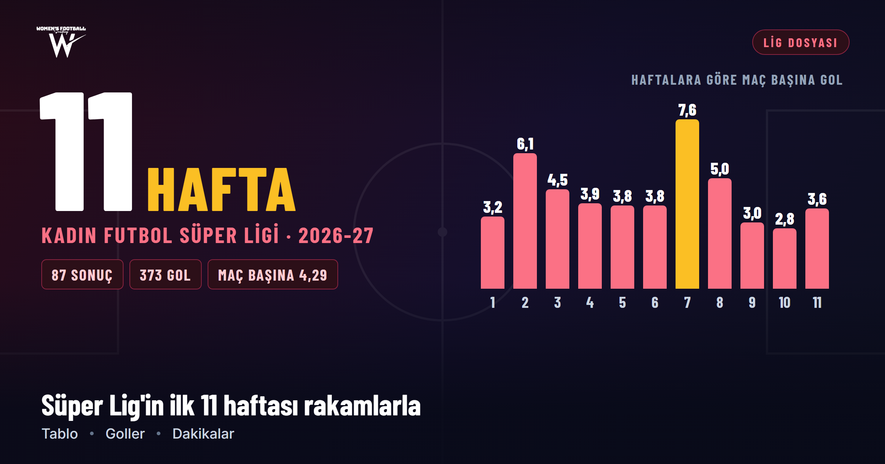

Süper Lig'in İlk 11 Haftası Rakamlarla
87 sonuç, 373 gol, maç başına 4,29. İlk altı takım 6 puan içinde; son iki sıradaki takımlar ligdeki gollerin yüzde 44'ünü yedi. Kadın Futbol Süper Ligi'nin ilk 11 haftası: tablo, goller, dakikalar.

Kadın Futbol Süper Ligi'nde 30 haftalık sezonun 11 haftası geride kaldı. 16 takım, 87 sonuç, 373 gol. Bu dosya ilk 11 haftayı rakamlarla özetliyor: puan tablosu, haftalık gol ortalaması, ev sahibi ve deplasman dengesi, gol ve asist sıralaması, dakikaların yaşa göre dağılımı.
Sayfadaki her sayı derleme anında veriden hesaplandı. Kaynaklar: TFF'nin resmî puan durumu, maç sonuçları ve maç raporları ile SoccerDonna maç raporları. Veri tarihi 20 Kasım 2026. Yorumu kısa tuttuk; neyin sayılıp neyin sayılmadığı yazının sonundaki kutuda.
Tablo
İlk altı takım 6 puan içinde. Son üç sıranın toplamı 1 puan.
Fenerbahçe 28 puanla lider. 10 maçta 9 galibiyet ve 1 beraberlik aldı; 45 gol attı, 1 gol yedi. Yediği tek gol ve tek puan kaybı aynı maçta: 6. haftadaki Yüksekovaspor 1-1 Fenerbahçe. Bir maçı eksik: 8. haftadaki Fenerbahçe – Kayseri Kadın FK maçı TFF fikstüründe 16 Aralık 2026 tarihinde görünüyor.
Trabzonspor 25 puanla ikinci ve Fenerbahçe ile birlikte ligin yenilgisiz iki takımından biri: 7 galibiyet, 4 beraberlik. Galatasaray ile Beşiktaş 24 puanda; averajda Galatasaray önde (+44, Beşiktaş +16). Beşinci sıradaki ABB FOMGET 23 puanda ve 52 golle ligin en çok gol atan takımı. Altıncı Hakkarigücü 22 puanda.
İlk altı takımın arasında 6 puan var. Yedinci Yüksekovaspor 17 puanda, altıncı sıranın 5 puan gerisinde.
Puan durumu: ilk dört, son üç
| # | Takım | O | G | B | M | A | Y | AV | P |
|---|---|---|---|---|---|---|---|---|---|
| 1 | Fenerbahçe | 10 | 9 | 1 | 0 | 45 | 1 | +44 | 28 |
| 2 | Trabzonspor | 11 | 7 | 4 | 0 | 30 | 4 | +26 | 25 |
| 3 | Galatasaray | 11 | 7 | 3 | 1 | 50 | 6 | +44 | 24 |
| 4 | Beşiktaş | 11 | 7 | 3 | 1 | 23 | 7 | +16 | 24 |
| ··· 5.–13. sıralar: tam puan durumu Süper Lig sayfasında ··· | |||||||||
| 14 | Bakırköy | 11 | 1 | 1 | 9 | 11 | 30 | −19 | 1* |
| 15 | Şile Bilgidoğa | 11 | 1 | 0 | 10 | 6 | 84 | −78 | 0* |
| 16 | Giresun Sanayispor | 11 | 0 | 0 | 11 | 2 | 81 | −79 | 0 |
Kaynak: TFF resmî puan durumu, 11. hafta sonu (20 Kasım 2026). O: oynanan maç, AV: averaj, P: puan. * Resmî puan, galibiyet ve beraberliklerin verdiği toplamdan 3 puan eksik: sahaya çıkmama nedeniyle puan silme cezası.
Dipte tablo başka görünüyor. Giresun Sanayispor 11 maçın hepsini kaybetti; averajı −79. Şile Bilgidoğa'nın 1 galibiyeti var, puanı 0. Bakırköy 1 galibiyet ve 1 beraberliğe karşın 1 puanda. Nedeni puan silme: iki takım da sahaya çıkmadığı maç yüzünden 3'er puan cezası aldı; resmî puanları, sonuçlarının verdiği toplamdan 3 puan eksik. Verideki 3 hükmen sonuçta sahaya çıkmayan takımlar da son üç sıradakiler: Şile Bilgidoğa (1. hafta), Bakırköy (2. hafta) ve Giresun Sanayispor (3. hafta).
Tam puan durumu ve bütün sonuçlar Süper Lig sayfasında.
Goller
Maç başına 4,29 gol. Son iki sıranın maçları çıkınca 3,11.
87 sonuçta 373 gol var: maç başına 4,29. Haftalık ortalama 10. haftadaki 2,75 ile 7. haftadaki 7,62 arasında değişti. 7. haftada 8 maçta 61 gol atıldı; bunların 35'i iki maçtan geldi: Galatasaray 22-0 Şile Bilgidoğa ve Giresun Sanayispor 0-13 Yüksekovaspor.
Haftalara göre maç başına gol
Kaynak: TFF maç sonuçları (20 Kasım 2026). Sütun: o haftanın maç başına golü; altında hafta ve gol/sonuç sayısı. Hükmen 3-0'lar dahil (1, 2 ve 3. haftalarda birer sonuç). 8. haftada 7 sonuç var.
Ortalamayı tablonun son iki takımı yukarı çekiyor. Şile Bilgidoğa ve Giresun Sanayispor'un yer aldığı 21 sonuçta 168 gol var: maç başına 8,00. Geri kalan 66 sonuçta ortalama 3,11. Bu iki takım toplam 165 gol yedi; ligdeki gollerin yüzde 44'ü. Farkın 10 gol ve üzerinde olduğu 5 maçın hepsinde ikisinden biri vardı.
En çok gol atan ABB FOMGET'in 52 golünün 35'i bu iki takıma karşı geldi.
Öbür uçta 6 maç golsüz bitti. Bunların 4'ü ilk yedi sıradaki takımlar arasında oynandı.
Ev Sahibi, Deplasman
Ev sahibi galibiyeti yüzde 41, deplasman galibiyeti yüzde 37.
87 sonucun 36'sı ev sahibi galibiyeti, 19'u beraberlik, 32'si deplasman galibiyeti. Oran olarak yüzde 41, yüzde 22 ve yüzde 37. Ev sahibi galibiyeti ile deplasman galibiyeti arasındaki fark 4 puan.
Gollerde de tablo benzer: ev sahipleri 199, konuk takımlar 174 gol attı.
87 sonucun dağılımı
Kaynak: TFF maç sonuçları (20 Kasım 2026), 3 hükmen sonuç dahil.
3 hükmen sonucun 2'si ev sahibi, 1'i deplasman hanesine yazıldı. Maç raporu olan 82 maçta dağılım şöyle: 33 ev sahibi galibiyeti, 19 beraberlik, 30 deplasman galibiyeti.
Gol ve Asist
İki oyuncu 17 golde. Asist kaydı 358 golün 219'u için var.
Ligde 362 oyuncu süre aldı, 138 oyuncu gol attı. Gol krallığında iki isim 17 golle ilk sırada: Cristina Martín-Prieto (Galatasaray) ve Armisa Kuç (ABB FOMGET).
Martín-Prieto 11 maçta 764 dakika oynadı ve ortalama 45 dakikada bir gol attı. Kuç tek maçta 8 gol attı: 2. haftadaki ABB FOMGET 23-0 Giresun Sanayispor maçı.
Üçüncü sırada Elizabeth Owusuaa (Hakkarigücü) var: 8 maçta 10 gol. Dördüncü sırayı 8 golle 3 oyuncu paylaşıyor: Jae-eun Song (Trabzonspor), Andrea Stašková (Fenerbahçe) ve Laurie Ann Moise (Kayseri Kadın FK). Song bu sayıya 530 dakikada ulaştı; gollerinin 4'ü penaltıdan.
Gol krallığı
| # | Oyuncu | Gol | Pen. | Maç | Dk |
|---|---|---|---|---|---|
| 1 | Cristina Martín-PrietoGalatasaray | 17 | 1 | 11 | 764 |
| 1 | Armisa KuçABB FOMGET | 17 | 1 | 10 | 867 |
| 3 | Elizabeth OwusuaaHakkarigücü | 10 | 2 | 8 | 720 |
| 4 | Jae-eun SongTrabzonspor | 8 | 4 | 9 | 530 |
| 4 | Andrea StaškováFenerbahçe | 8 | 1 | 10 | 712 |
| 4 | Laurie Ann MoiseKayseri Kadın FK | 8 | 1 | 10 | 784 |
Asist
| # | Oyuncu | Asist |
|---|---|---|
| 1 | Melike PekelGalatasaray | 7 |
| 2 | Zeynep KerimoğluFenerbahçe | 6 |
| 3 | Andrea StaškováFenerbahçe | 5 |
| 3 | Donjeta HalilajTrabzonspor | 5 |
| 3 | Jae-eun SongTrabzonspor | 5 |
| 3 | Jéssica SilvaGalatasaray | 5 |
| 3 | Melike ÖztürkGalatasaray | 5 |
| 3 | Rasmata SawadogoABB FOMGET | 5 |
| 3 | Zsanett KajánFenerbahçe | 5 |
Kaynak: goller, maç ve dakika TFF maç raporlarından; asist SoccerDonna maç raporlarından (82 maç, 358 golün 219'u için kayıt var). Eşit sayıda gol atanlar daha az dakikaya göre, asistte ada göre sıralı.
TFF maç raporlarında asist yazılmıyor. Asist sayıları SoccerDonna maç raporlarından geliyor: raporu olan 82 maçtaki 358 golün 219'u için asist kaydı var (yüzde 61). Bu kayıtlarda ilk sırada 7 asistle Melike Pekel (Galatasaray), ikinci sırada 6 asistle Zeynep Kerimoğlu (Fenerbahçe) var. 7 oyuncu 5 asistte. Listedeki 9 oyuncunun hepsi puan durumunun ilk beş takımında oynuyor.
Dakikalar
21 yaş ve altının payı ligde yüzde 25. Kulüpten kulübe yüzde 0 ile yüzde 67 arasında.
SoccerDonna maç raporları her oyuncunun maç günündeki yaşını veriyor. Raporu olan 82 maçta oynanan dakikaların yüzde 25'i 21 yaş ve altındaki oyunculara ait.
Kulüpler arasındaki fark büyük. En yüksek beş pay: Şile Bilgidoğa (yüzde 67), Giresun Sanayispor (yüzde 61), Haymana (yüzde 60), Kayseri Kadın FK (yüzde 46), 1207 Antalyaspor (yüzde 44). En düşük beş pay: Fenerbahçe (yüzde 0), Galatasaray (yüzde 2), Trabzonspor (yüzde 2), Hakkarigücü (yüzde 6), Beşiktaş (yüzde 7).
21 yaş ve altındaki oyuncuların dakika payı
EN YÜKSEK BEŞ PAY
EN DÜŞÜK BEŞ PAY
Kaynak: SoccerDonna maç raporları (82 maç, 20 Kasım 2026); yaş maç günü yaşı, dakikalar yaklaşık. Sütunun altında kulübün puan durumundaki sırası. Kesikli çizgi: lig geneli, yüzde 25.
Puan durumunun ilk dört takımının hepsi en düşük beşin içinde. Fenerbahçe'nin raporu olan 10 maçında 21 yaş ve altında hiçbir oyuncu süre almadı. En yüksek beş payın 4'ü ise tablonun alt yarısındaki takımlarda. Bu sayılar neden sonuç ilişkisi kurmaz; yalnızca dakikaların kimde toplandığını gösterir.
16 oyuncu, takımının raporu olan bütün maçlarında 90 dakika sahada kaldı. 5 oyuncuyla en kalabalık grup 1207 Antalyaspor kadrosunda.
Her dakikayı oynayanlar
- Trabzonspor (10 maç)
Blerta Smaili - Galatasaray (11 maç)
Aude Gbedjissi - Hakkarigücü (11 maç)
Justice Tweneboaa, Lushomo Mweemba - Yüksekovaspor (10 maç)
Numpoa Madina Fabıola Traore - Sultanbeyligücü (11 maç)
Ayşe Şevval Ay - Ünye (10 maç)
Precious Onyinyechi Christopher - Haymana (11 maç)
Princess Owusu - 1207 Antalyaspor (10 maç)
Amanda Maria Lihv, Beyza Emine Saruhan, Chinatsu Kaio, Kiera Riley Laney, Myla Brynn Schneider - Bakırköy (10 maç)
Gizem Aydın, Helin Erbulun - Şile Bilgidoğa (10 maç)
Ecrin Koyun
Kaynak: TFF maç raporları. Parantez içinde takımın raporu olan maç sayısı.
Yöntem ve sınırlar
- Kapsam. Kadın Futbol Süper Ligi 2026-27, ilk 11 hafta. Veri tarihi 20 Kasım 2026. 88 maçlık fikstürün 87 maçında sonuç var; 8. haftadan 1 maç henüz oynanmadı.
- Sonuçlar. Tablo, gol ortalamaları ve ev sahibi/deplasman dağılımı TFF'nin 87 resmî sonucu üzerinden. Bunların 3'ü hükmen (3-0). 2 sonucun (5. hafta Giresun Sanayispor 0-3 Beşiktaş, 6. hafta Ünye 3-0 Giresun Sanayispor) iki kaynakta da maç raporu yok; nedenini veri söylemiyor.
- Oyuncu sayıları. Gol, dakika ve asist, maç raporu olan 82 maçı kapsar. Bu 82 maçta 358 gol atıldı, maç başına 4,37. 1 maçın oyuncu verisi, TFF raporu olmadığı için SoccerDonna raporundan alındı (4. hafta Ünye 3-3 Haymana). Kendi kalesine atılan goller oyuncuya yazılmaz.
- Yaş ve dakika. Yaş, SoccerDonna maç raporundaki maç günü yaşı. Yaş payında dakikalar yaklaşık: maç 90 dakika sayılır, uzatma dakikaları yoktur. Yaşı yazılmamış 270 dakika (Şile Bilgidoğa, 1 oyuncu) hesabın dışında.
- Asist. Kaynağın yazdığı kadar. Asist kaydı olmayan gol, asistsiz gol demek olmayabilir.
- Bu yazıda olmayanlar. Federasyon kararlarının ayrıntıları, sakatlık ve oyuncu cezaları, scout değerlendirmeleri.
Yazı: WFS Analiz Masası. Veri: TFF resmî puan durumu, maç sonuçları, fikstür ve maç raporları (11. hafta, 20 Kasım 2026); SoccerDonna maç raporları (20 Kasım 2026). Women's Football Scouting tarafından derlendi.
Diğer dosyalar